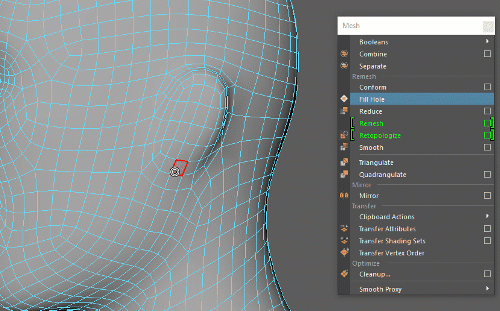

通过将非三角形面分割成三角形，重新定义网格或选定组件的拓扑。使用“重新划分网格”(Remesh)创建均匀细分的三角形网格或将细节添加到网格曲面的特定区域。
“重新划分网格”(Remesh)和“预处理网格”(Preprocess Mesh)（“网格 > 重新拓扑”(Mesh > Retopologize) >  ）都可用于减少输入网格的多边形计数，但在某些特定情况下，使用其中一个选项会产生比使用另一个选项更好的结果。有关详细信息，请参见使用重新拓扑预处理网格的最佳实践。
）都可用于减少输入网格的多边形计数，但在某些特定情况下，使用其中一个选项会产生比使用另一个选项更好的结果。有关详细信息，请参见使用重新拓扑预处理网格的最佳实践。

使用以下选项可设置在选择“网格 > 重新划分网格”(Mesh > Remesh)时发生的情况。
- 最大边长(Max Edge Length)
-
确定结果网格上可能的最长边。“自动”(Automatic)可将其设置为原始模型的平均边长。“自定义”(Custom)允许您设置自己的最大边长（以世界空间单位表示）。
- 收拢阈值(%)(Collapse Threshold (%))
-
最大边长的百分比。短于此百分比的边将被收拢为一个顶点。此属性用于清理边细分。
- 平滑强度(Smooth Strength)
-
重新划分网格后应用到顶点的平滑量。
- 插值类型(Interpolation Type)
-
用于确定新点所处位置的算法。使用“混合”(Hybrid)可获得最佳结果。
- 细分边界(Tessellate Borders)
-
指定选定区域边界上方的区域是否包含在重新划分网格中。